Your Word-to-PDF example has all five. Today's tool has only the third.
The tool gives its answer at the end of a week of work and money. A lifesaver gives it in the first minute.
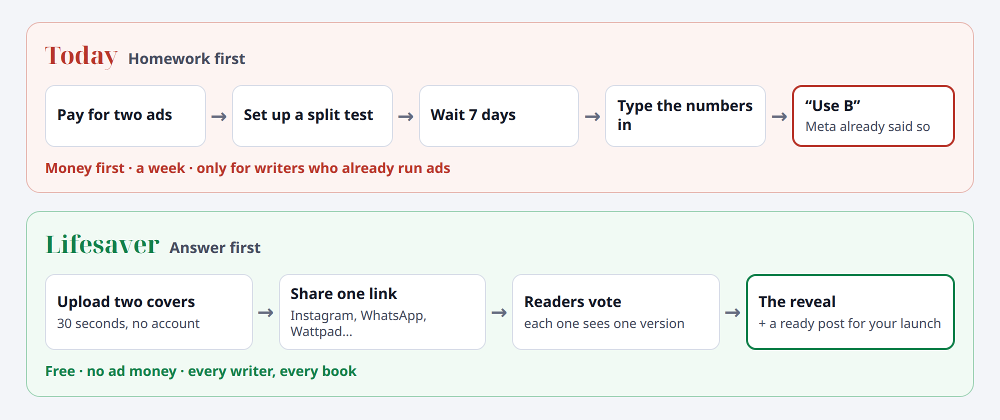
| # | Why it feels boring | What it means |
|---|---|---|
| 1 | It only helps writers who already run A/B tests in ads. | Most writers don't. The ones who do already get the winner from Meta or TikTok. |
| 2 | It asks for something before it gives anything. | Money for two ads, a week of waiting, typing numbers. Then one line. |
| 3 | The library is empty on day one. | It fills only if writers do extra, unpaid work after their test. |
| 4 | It speaks our language. | We say "tests, clicks, p-value". Writers think "Which cover? Why don't I sell? Where does my money go?" |
| 5 | Nothing to show a friend. | No "look what this told me" moment, so nobody spreads it. |
New rule. A/B testing is the engine, never the product. Nobody wants "an A/B test". People want "the right cover", "my money back" and "the truth".
Stop doing:
| The moment | What writers do today | The lifesaver |
|---|---|---|
| "Which cover?" (or title, blurb, book idea) | Ask friends or post a poll: people see both covers and the votes, and most are friends. Or pay PickFu: about $1 per answer, about $50 for 50 people. | Duelo · Duel: a free, real A/B test with readers. Results in days. |
| "My ads eat my money" | Guess when to stop a keyword. Advice goes from "2–3 clicks" to "30+ clicks". | Doctor de anuncios · Ad Doctor: drop the report, see what to stop. 10 seconds. |
| "I changed something and sales went up. Did it work?" | Believe it. | ¿Real o suerte? · Real or luck?: two numbers, the truth in 5 seconds. |
A new home page with three doors. Each door is a pain, in the writer's words. No forms, no statistics words. The library and the ad-test planner move inside.
A warmer voice everywhere: plain, kind, direct. For example: "Too close to call. Both work. Pick the one you love and stop worrying."
Where the A/B testing is, in each one:
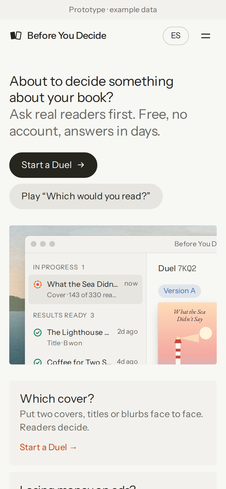
Two covers face each other. Each reader sees only one, picked at random, like a book in a store. Readers decide, not friends.
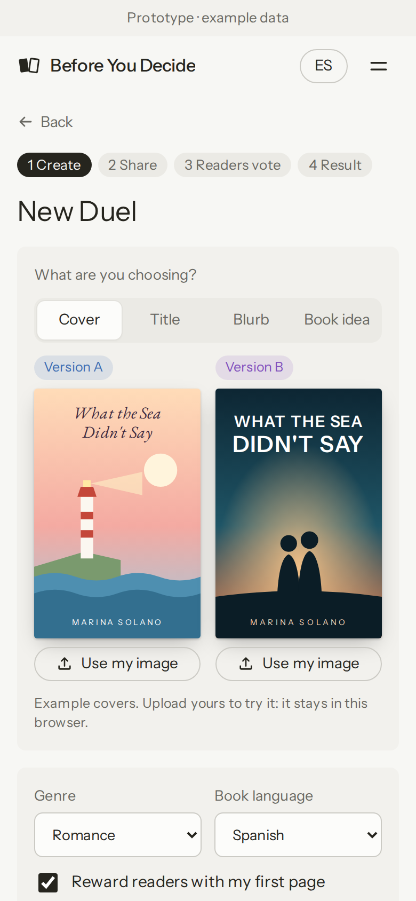
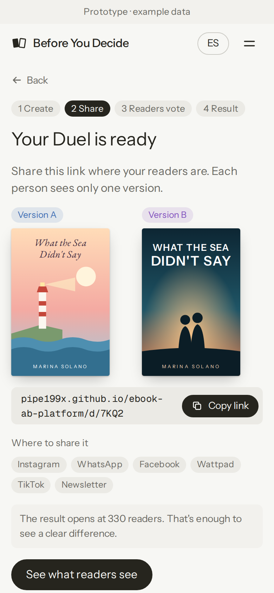
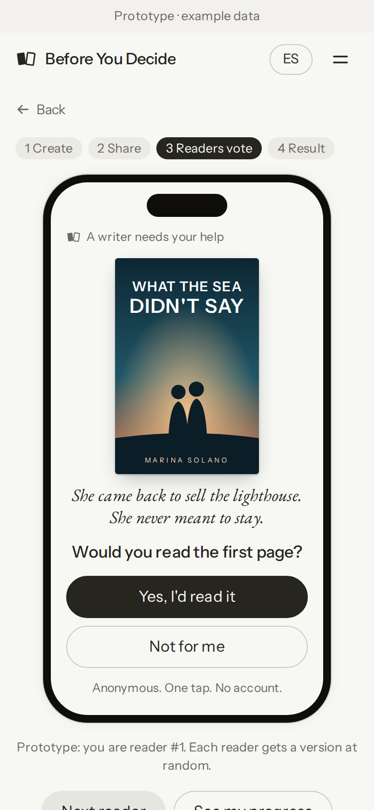
Why this is honest (and a poll is not):
Bonus for the writer: voters who said yes can read the first page and follow the writer's own "tell me when it's out" link. The Duel picks the cover and finds the first readers.
Bonus for the launch: "Help me choose my cover!" is a post followers love. The Duel turns a decision into launch buzz.
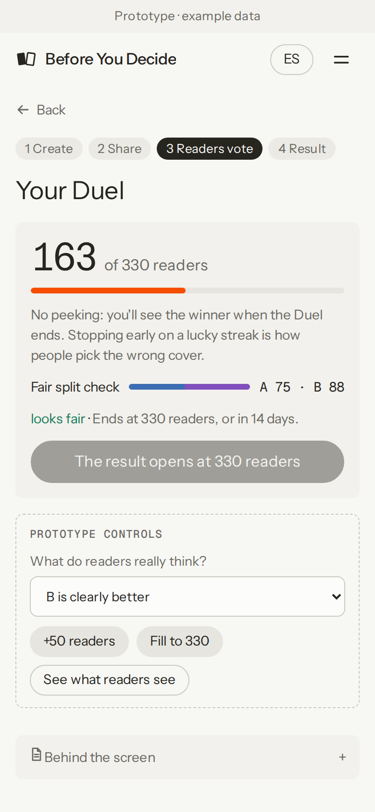
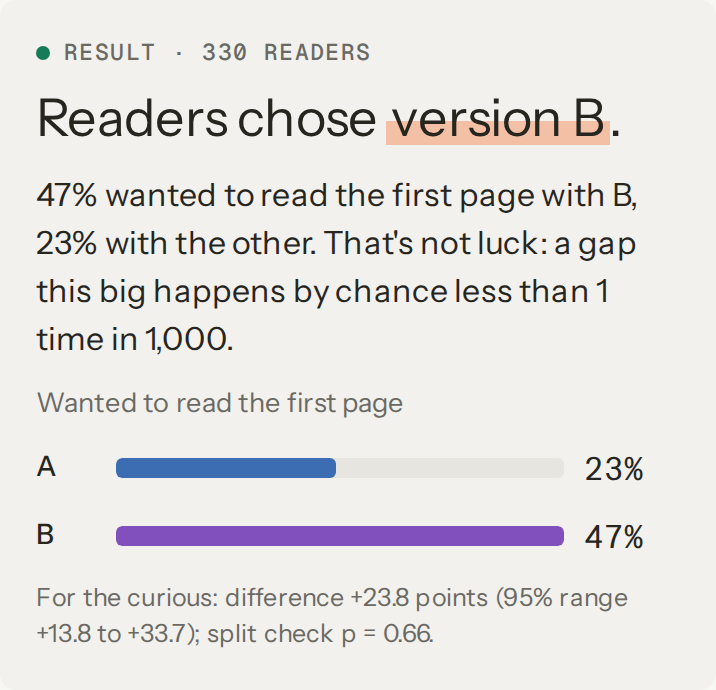
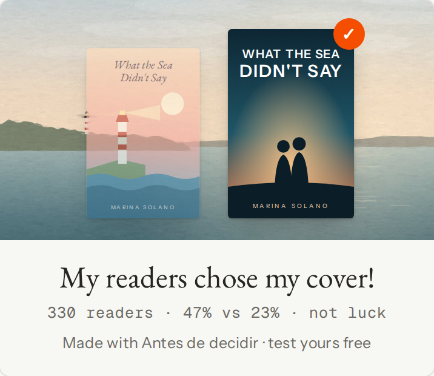
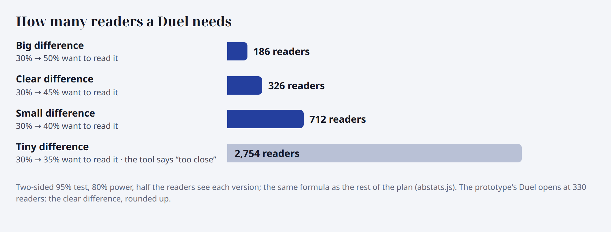
Four honest endings, never a guess: "Readers chose B" (not luck) · "Too close to call: both work" (also an answer) · "Not sure yet: about N more readers" · "Not fair yet" (the random split broke, so no winner). The prototype shows all four.
"¿Cuál leerías? · Which would you read?" is a 2-minute game. Every vote a writer gives on other writers' Duels earns one vote for their own. Photofeeler uses this same "karma" model for profile photos.
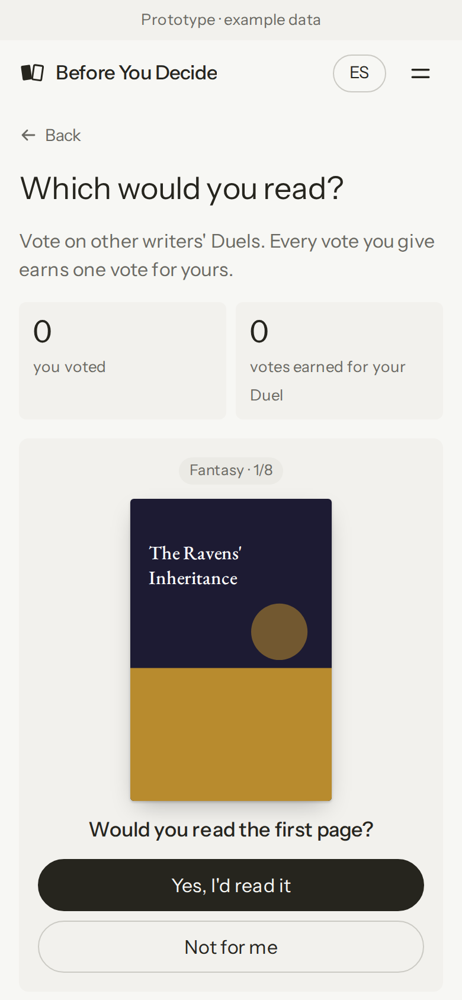
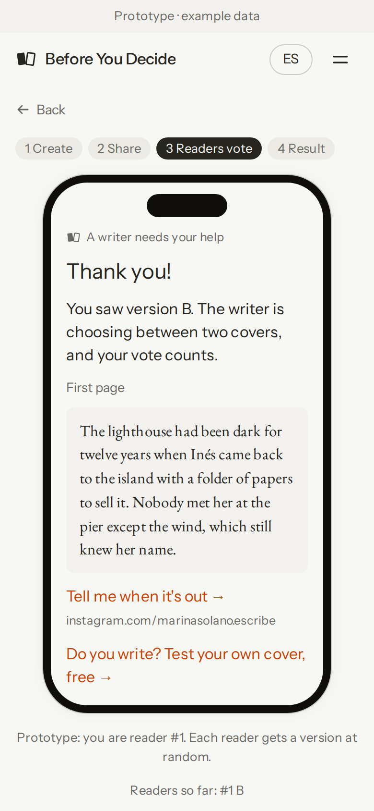
Why people play: judging covers is fun, takes seconds, and readers discover new books. Writers play because it fills their own Duel.
The cost: people upload images, so someone checks them. At first, you approve which Duels enter the game. Links stay unlisted, there is a report button, and covers are deleted 30 days after the Duel.
The writer drops in the Amazon Ads search-term report. In seconds, in plain words: what to stop, what to keep, what is luck, and how long to wait. The file never leaves the browser.
| Verdict | In the example | Rule (in plain words) |
|---|---|---|
| Stop | 8 · USD 142 a month | At least 10 clicks, and 90% sure it earns less than it costs. |
| Keep | 2 | At least 10 clicks, and 90% sure it earns more than it costs. |
| Luck | 6 | Looks great, but from fewer than 15 clicks. Don't raise the bid yet. |
| Wait | 8 | Wait about N more clicks. If it's too close to break-even to judge soon, pause it when money is tight. |
How it decides. Each keyword starts from the book's own average, as if it already had 20 clicks; then its own clicks and sales move it (a beta-binomial model). Break-even = cost per click ÷ what the writer earns per sale (70% of a USD 4.99 ebook is about USD 3.40).
Why writers need it. Advice on when to pause a keyword goes from "2–3 clicks" to "30+ clicks". The right number depends on the book. The Doctor computes it.
Meta Ads: book ads there usually send people to Amazon, so Meta sees clicks, not sales. The full tool compares cost per click instead.
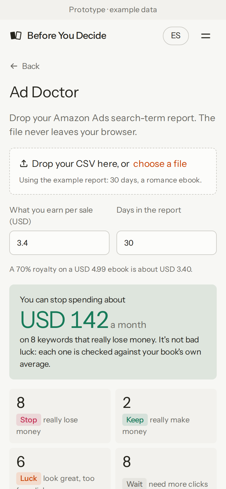
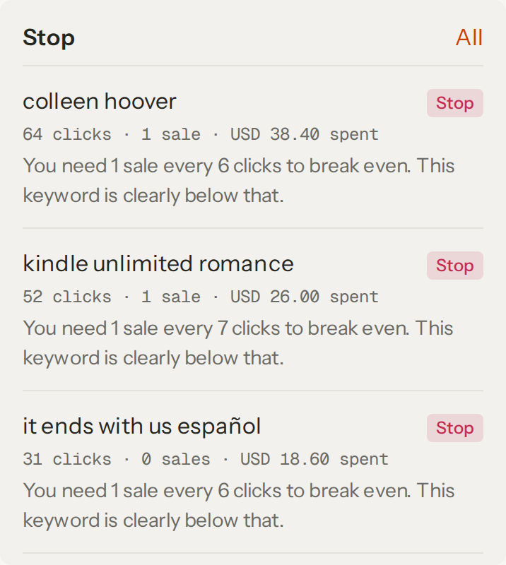
Every verdict comes with its reason, in the writer's words: "64 clicks · 1 sale · USD 38.40 spent. You need 1 sale every 6 clicks to break even. This keyword is clearly below that."
That's the screenshot a writer posts in a Facebook group: "this free tool found USD 142 a month I was wasting."
"9 sales last week, 14 this week, after my new blurb. Did it work?" It's the most-asked question in writer groups.
The answer: "You can't tell yet. A jump like this happens by luck about 2 times in 5. If both paces held for about 28 days each, you'd know."
With 9 → 30 sales the answer flips: "It's real. A change this big happens by luck less than 1 time in 1,000."
Inside: an exact test on the two sales counts, adjusted for the number of days. It also says: "a holiday, a promotion, a new review or a price change can move sales too".
Why it's a lifesaver: it stops writers from rebuilding everything around a lucky week, or dropping a good change after an unlucky one. And it points to the Duel when the change was a cover or a title.
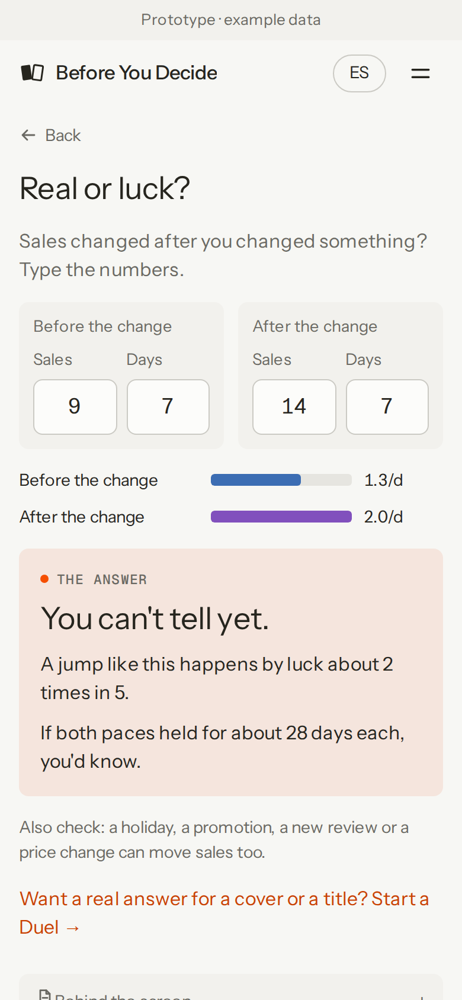
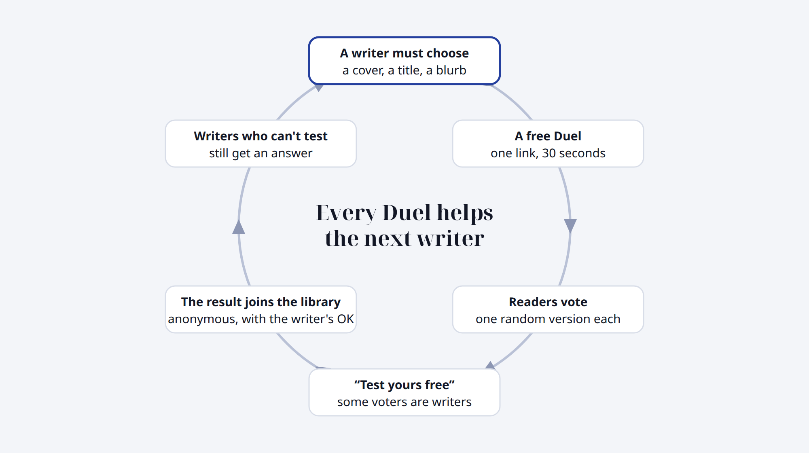
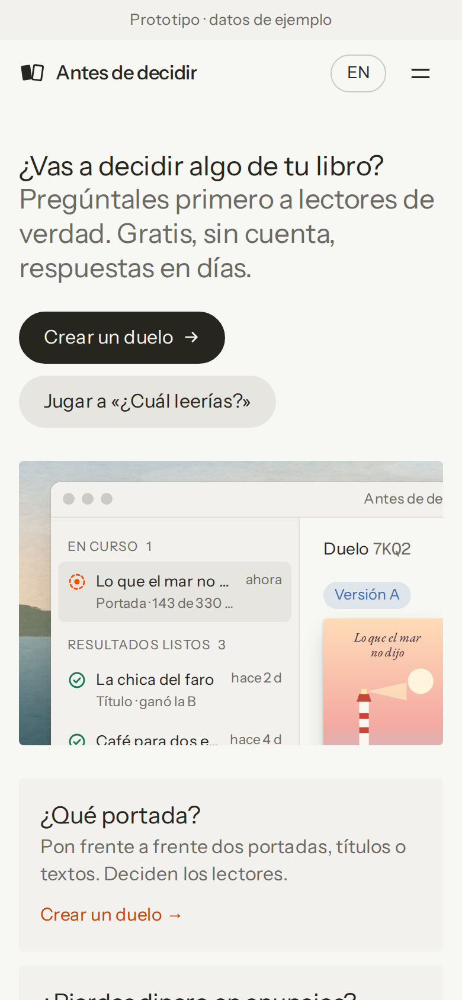
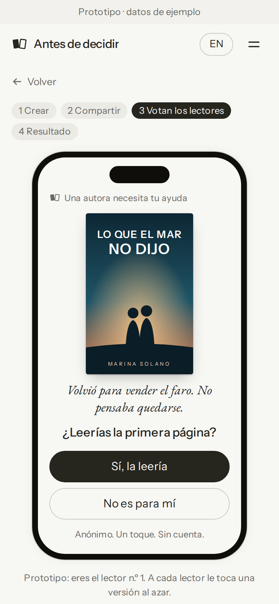
Real votes from real people flow through the same Kafka → Databricks pipeline. The platform stops being only a simulation.
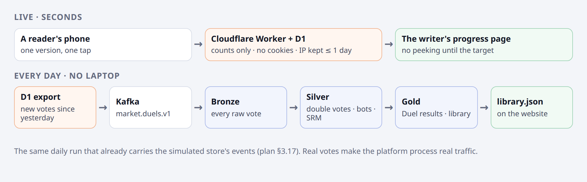
Real problems to show recruiters:
What stays: the simulated store, for recruiters only, under "Behind the scenes". It still checks the math against a known truth.
Behind the screen: the prototype shows, beside every screen, what happens underneath.
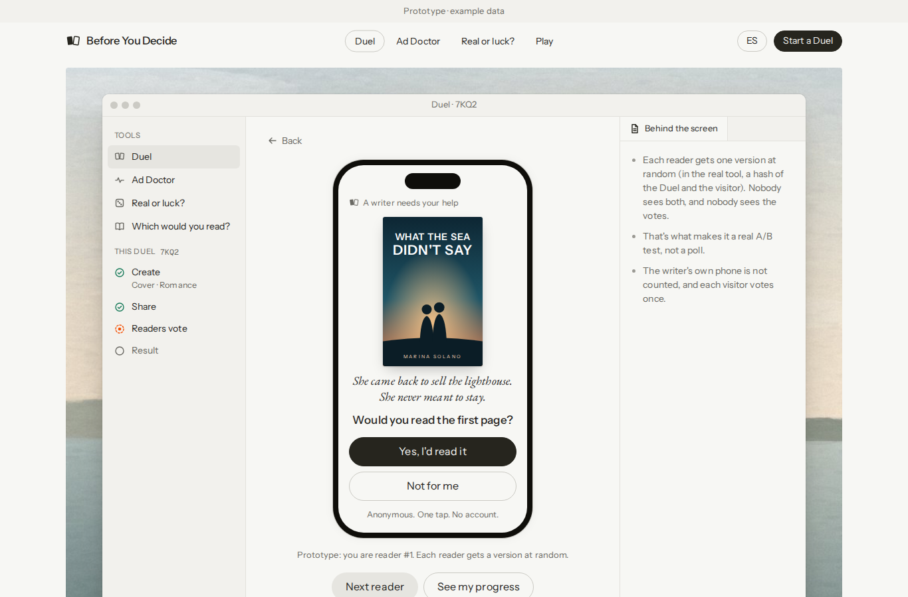
| Topic | What it means |
|---|---|
| Effort | All recommended changes add about 74–110 h. The plan goes from about 154 h to about 228–264 h, about 11–13 weeks at 20 h a week. The "Lifesaver launch" package alone: about 36–52 h. |
| $0 still holds (checked 2026-10-16) |
Cloudflare Workers Free: 100,000 requests a day. D1 Free: 500 MB per database, 10 databases, 2 MB per row, 100,000 rows written a day. Covers are shrunk in the browser before upload (the prototype turned a test image into a 24 KB cover; real covers about 60 KB), so one database holds thousands of Duels. Covers are deleted 30 days after the Duel. Cloudflare R2 (file storage) asks for a payment method, so we don't use it. Fix for plan v3: the plan says D1 has "5 GB"; that is per account, and each database gets 500 MB. |
| Privacy | Today only the opt-in Share leaves the browser (D22, D24). A Duel needs voters' anonymous votes to leave it too: counts only, no cookies, no names, the IP never kept longer than one day. Ad Doctor and Real or luck stay fully in the browser. |
| Moderation | People upload images. Links are unlisted; at first you approve Duels before they enter the game; a report button; automatic deletion. A few minutes a week at first. |
| Votes are not sales | A Duel shows what grabs readers' attention. We say so on the result page. |
| Cheating | A writer voting for their favorite only fools themselves. Still: one vote per visitor per Duel, the writer's phone not counted, and the SRM check. |
| Cold start | Smaller, but real. The first Duels depend on the writer's own followers; the game helps writers without any. |
| Ad report formats | Amazon's columns and number formats vary by country and language. The prototype already reads English and Spanish files (commas or semicolons). Founding writers' sample reports make it robust. |
| Option | Cost | Fair test? | What it lacks |
|---|---|---|---|
| Facebook or Instagram poll | Free | No | Both covers side by side, visible votes, mostly friends. |
| Rate Book Cover (stars from strangers) | Free, paid extras | No | Star ratings of one cover, not two versions; voters aren't your readers. |
| PickFu | About $1 per answer (about $50 for 50 people), plus about $0.40 per answer for each audience filter | Panel | Paid per poll; English-first panel. |
| A/B test in Meta or BookBub ads | Ad money | Yes | Costs money and a week, and needs ad skills. |
| Duel | Free | Yes | Needs voters: the writer's followers plus the game. |
You asked for cursor.com's style. The prototype now uses it: warm paper colors, regular-weight type, pill buttons, app windows on paintings, and a light/dark switch. We copy the style, never their name, logo, fonts or images.
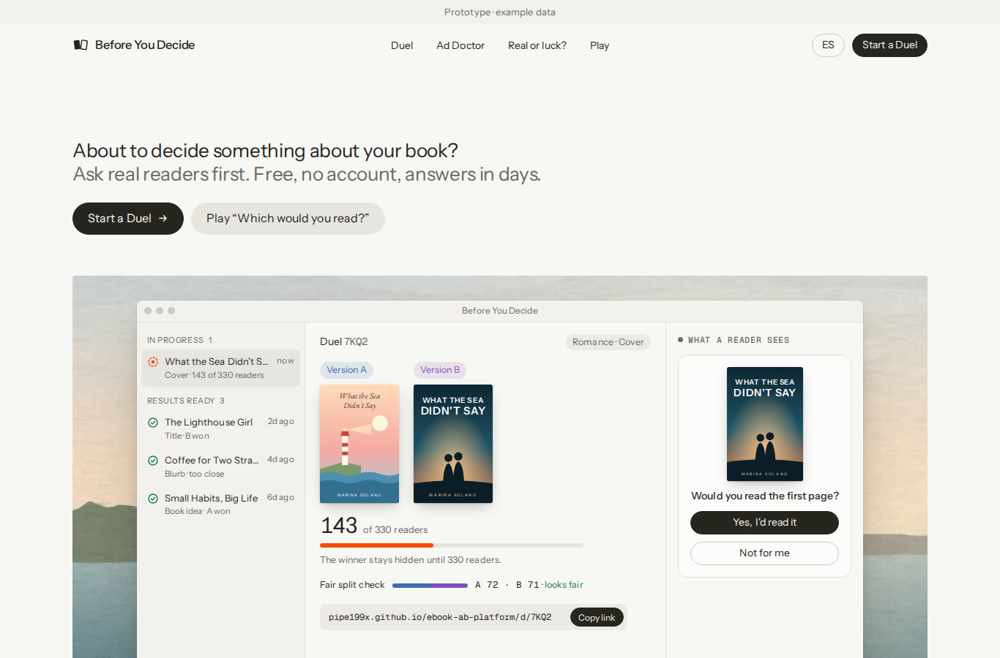
Taken from cursor.com (the style):
Ours (nothing copied):
Change L11 on the next page brings this look to the real site and to the plan's mockups.
| # | Change | My advice | Effort |
|---|---|---|---|
| L1 | Duel: cover, title, blurb or book idea. One link, one version per person, progress without peeking, the reveal and a share image. Optional first page and the writer's own "tell me when it's out" link. | Yes, the main one | 25–35 h |
| L2 | Which would you read? A game: readers vote, and writers earn votes by voting. You approve entries at first. | Yes | 8–12 h |
| L3 | Ad Doctor: Amazon and Meta reports, read in the browser. Stop / keep / luck / wait N clicks, and the money to stop wasting. | Yes | 18–26 h |
| L4 | Real or luck?: two numbers, an honest answer. | Yes | 3–5 h |
| L5 | New home page with three doors, one per pain. The library and the ad-test planner move inside. | Yes | 3–5 h |
| L6 | The library fills itself from Duels: opt-in, same 5-result minimum, by genre × book language × what changed. | Yes | 4–6 h |
| L7 | Real events through the platform: Duel events → Kafka → Bronze/Silver/Gold, an SRM check per Duel, a bot filter, 2 new Gold views (18 → 20). | Yes | 8–12 h |
| L8 | Lifesaver first: ship L1 + L4 + L5 right after Phase 0 (around week 3), then build the pipeline while real data arrives. | Yes (your call) | +2–4 h |
| L9 | A warmer voice: plain, kind, direct sentences on every screen. | Yes | included |
| L10 | Later: "for everyone". The same Duel for any creator or small seller. | Not now | 0 h now |
| L11 | New look in the style of cursor.com (section 11): warm paper colors, regular-weight type, pill buttons, app windows on paintings, light and dark themes. Our own name, logo and paintings; free fonts. For the site, the mockups and the prototype. | Yes (you asked) | 3–5 h |
Lifesaver launch: L1 + L4 + L5 + L8 + L9 + L11, about 36–52 h. Real writers use it around week 3.
Full: L1–L9 and L11, about 74–110 h. Plan total about 228–264 h.
My advice: before we build anything, show the prototype to 5 writers. If nobody asks "when can I use it?", we change it first.
What to reply: for example "Lifesaver launch", "Full", or a list such as "L1, L3, L4, L8". Then I write plan v3.0, update the demo, render, and stop for your review. Nothing gets built until you say "start Phase 0".